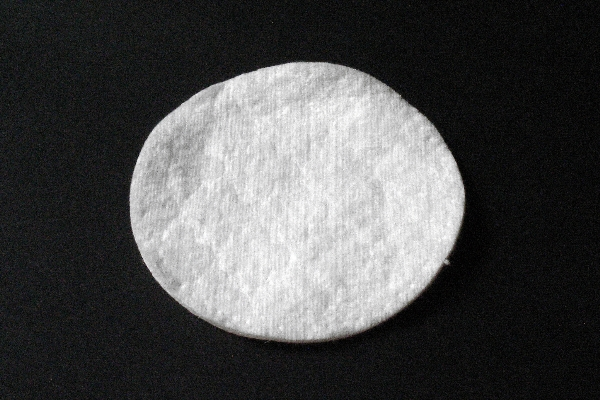
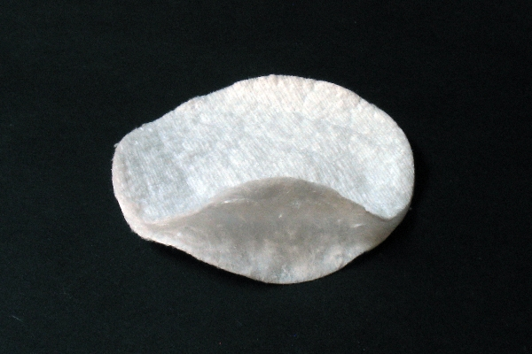
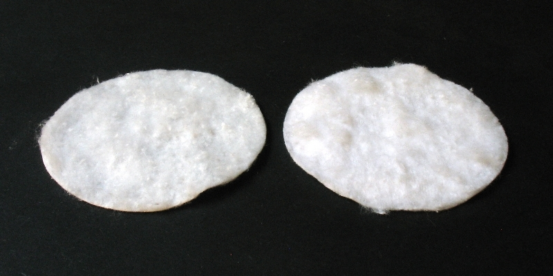
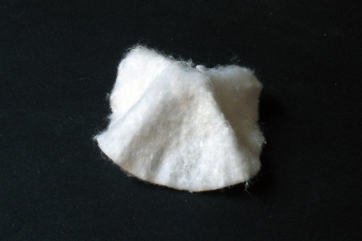
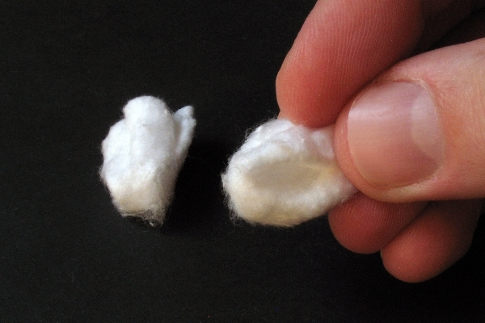

|
Sposobów na czyszczenie optyki w astronomii istnieje wiele, jednak staranne i bezpieczne wyczyszczenie drogiego filtra stanowi spore wyzwanie, opiszę poniżej metodę, którą stosuję, licząc, że moje doświadczenie pomoże Wam w tym zadaniu. :) OSTRZEŻENIE
Należy zdawać sobie sprawę z faktu, iż przy każdej metodzie czyszczenia filtrów z zastosowaniem płynów czyszczących, istnieje ryzyko takiego rodzaju, jak możliwość dostania się owych płynów pomiędzy warstwy filtra i jego uszkodzenie. Problem tyczy się głównie rozpuszczalników, alkoholi itp. środków, gdyż one, posiadając dużo mniejsze od wody napięcie powierzchniowe, znacznie łatwiej wnikają we wszelkie mikro szczeliny. Woda nie spenetruje nam tak łatwo warstw i powłok, i nie dokona uszkodzeń. Zagadnienie dotyczy filtrów złożonych jak np. Dichroicznych i Interferencyjnych, czyli LP, wąskopaskowe itp. . Zagłębiając się bardziej w zagadnienie, wiedzieć należy, iż istnieją dwa sposoby powstawania filtrów wielowarstwowych, a mianowicie: sposób 1 - spory arkusz szkła/podłoża powlekany jest warstwowo w całości, a następnie, z arkusza wycinane są docelowe filtry, okrągłe, lub inne kształty. Ta metoda produkcji stosowana jest w tańszych filtrach. W momencie wycinania napylone powłoki w miejscach cięć zostają uszkodzone i odsłaniają się warstwy (niczym w przekrojonej kanapce), co może spowodować, że faktycznie, gdy do czyszczenia filtrów użyjemy zbyt dużo substancji płynnych, i dostaną się one na brzeg filtra, mogą wniknąć między odsłonięte warstwy i uszkodzić filtr. sposób 2 - filtry są wycinane z arkusza szkła/podłoża na wymiar i dopiero wtedy powlekane warstwowo, a brzegi warstw/powłok są zabezpieczane. Ta metoda produkcji stosowana jest w droższych filtrach, sprawia ona, że ryzyko dostania się płynów czyszczących między warstwy jest dużo mniejsze, choć nie wykluczone, ponieważ warstwy, z czasem, szczególnie na brzegach, ulegają degradacji, co może otwierać drogę opisanym tu problemom. Nie jest więc zalecane zalewanie filtrów (czy to w oprawie, czy bez oprawy) zbyt obfitą ilością żadnych płynów czyszczących, w żadnej metodzie czyszczenia. Zagadnienie nie dotyczy prostych filtrów typu Wratten (kolorowe szkiełka), gdyż te filtry są jednorodne, nie posiadają warstw ani powłok, które ciecz by mogła spenetrować. . Oczywiście istnieją też filtry typu Wratten z powłokami antyodblaskowym, np. Baader Longpass, tu też należy zachować ostrożność. ASORTYMENT CZYSZCZĄCY . - Gruszka - Patyczki kosmetyczne - Płatki kosmetyczne Gruszka, patyczki, standard powiecie, ale to płatki kosmetyczne są moim podstawowym narzędziem w walce z zanieczyszczeniami na filtrach. Jednak to nie mogą być pierwsze lepsze płatki, lecz muszą to być jedne z tych grubszych, dających się rozwarstwić na dwie części. Bierzemy taki płatek kosmetyczny, rozwarstwiamy go na dwie niezależne połowy, najlepiej tak, aby obie części były równiej grubości. Gdy się uda, to drugą część odkładamy na chusteczkę, na potem, jeśli jednak jedna z nich wyjdzie zbyt cienka, to ją wyrzucamy. Składamy teraz taką połówkę płatka w sposób pokazany poniżej, aby uzyskać wygodną, miękką część roboczą. Jaki jest cel takiego zabiegu? Po pierwsze, taki rozwarstwiony płatek lepiej zbiera zanieczyszczenia, głównie przez migrację części roboczej (włókna w czasie naszych ruchów się przemieszczają) znacznie dłużej pracuje nowymi elementami zbierającymi. Przy klasycznym użyciu płatka, utwardzoną powłoką zewnętrzną, zgarnięty przez nią brud jest następnie wleczony i rozmazywany po dalszej powierzchni filtra. To samo tyczy się wszelakim długopisów czyszczących, i to na dużo większą skalę, bo płatki używamy jednorazowo, a tam końcówki czyszczące wielokrotnie. Nadto, gdy zdarzy nam się niefart i pod powierzchnię czyszczącą dostanie się twardy pyłek, który niechybnie stanie się źródłem powstania rys, zwłaszcza w przypadku długopisów czyszczących ma na to ogromną szansę, zresztą w przypadku czyszczenia patyczkami kosmetycznymi, oraz utwardzoną powierzchnią płatka również, w przypadku prezentowanego sposobu szanse ma znacznie mniejsze, gdyż najpewniej uwięźnie gdzieś w luźnych włóknach bawełny, z brakiem szans na kontakt z odpowiednim dociskiem z czyszczoną powierzchnią, no i chyba o to nam chodzi, prawda? Przygotowanie płatka kosmetycznego . 1-1  1-2  1-3  1-4  1-5  1-6  CHEMIA . Alkohol izopropylowy - dobrze rozpuszcza przyschnięty rosą brud, ale lubi pozostawiać smugi Benzyna ekstrakcyjna - doskonale czyści tłuszcz i pozostawione przez alkohol izopropylowy smugi :] Filtry czyszczę na dwa sposoby, a mianowicie, w oprawach lub z nich wyjęte. CZYSZCZENIE FILTRÓW W OPRAWIE . Gruszką zdmuchujemy większe zanieczyszczenia, bierzemy w palce przygotowany jak powyżej płatek kosmetyczny, podajemy na jego końcówkę odrobinę alkoholu izopropylowego i czyścimy delikatnie wstępnie filtr z przyschniętych rosą brudów. (Filtry w procesie użytkowania kurzą się i jednocześnie z powodu różnic temperatur, zwłaszcza zimą, zaparowują po przyniesieniu z mrozu do domu, a wtedy, osiadły na nich brud, rozpuszcza powstała rosa i przykleja go do ich powierzchni. Z tym problemem dobrze radzi sobie woda oraz alkohol izopropylowy, mniej skuteczna jest benzyna ekstrakcyjna, ale jej zadaniem, jest walka głównie z tłuszczem i smugami). Po izopropylu przystępujemy do kolejnej fazy czyszczenia, mianowicie za pomocą benzyny ekstrakcyjnej. Bierzemy w palce przygotowany jak powyżej płatek kosmetyczny, podajemy na jego końcówkę odrobinę benzyny ekstrakcyjnej i czyścimy delikatnie. Czynność powtarzamy tak długo, aż powierzchnia filtra pozostanie nieskazitelna. Ruchy wykonujemy koliste, kończąc zawsze przy brzegu filtra. Bywa, że na koniec procesu czyszczenia, w miejscu oderwania ostatniego płatka od powierzchni filtra, po benzynie ekstrakcyjnej pozostaje mała plamka, można ją usunąć za pomocą nasączonego bardzo delikatnie benzyną ekstrakcyjną patyczka kosmetycznego. CZYSZCZENIE FILTRÓW WYJĘTYCH Z OPRAWY . Czyszczenie filtrów wyjętych z oprawy jest o tyle korzystniejsze, że nie musimy borykać się z resztkami smug, które zostają na filtrze, gdy czyszcząc w oprawie, nie możemy wacikiem zjechać za brzeg filtra, upierdliwość tej metody jednak jest taka, że trzeba filtr rozkręcać, a nie każdemu to łatwo przychodzi. Ja filtry rozkręcam bardzo grubą zaokrągloną igłą, taka nie rysuje rowka, za który się to czyni, a używana umiejętnie, daje duże wyczucie tego, co się robi. Chwytamy filtr pewnie, upewniamy się, że igła dobrze leży w rowku pierścienia zaciskowego, i mocnym, ale bardzo drobnym ruchem, zapierając palce o palce, powodujemy pierwsze obrócenie pierścienia. Potem, jak już uwolniliśmy zacisk, idzie łatwiej, ale nie należy tracić czujności, bo chwila nieuwagi sprawi, że porysujemy sobie filtr. Gdy filtr mamy już wyjęty z oprawy, na blacie kładziemy wieżą chusteczkę higieniczną, na nią nierozwarstwiony płatek kosmetyczny jako podkładkę, a na niego kładziemy szkiełko filtra. Drugi, już rozwarstwiony, ale płaski płatek kosmetyczny (fot. 1-4) nasączamy odrobiną alkoholu izopropylowego i przecieramy nim filtr kilka razy. Filtr może próbować się ślizgać po płatku podkładce, ja, aby temu zapobiec, blokuję go bambusowym patyczkiem od szaszłyka. Jeśli zachodzi taka konieczność, to czynność przetarcia ponawiamy, płatków nie żałujemy. Jako drugi etap pucowania, rozwarstwiony płatek nasączamy benzyną ekstrakcyjną i przecieramy aż do uzyskania idealnie czystej powierzchni. Ostatecznego przetarcia filtra możemy dokonać nierozwarstwionym płatkiem z benzyną ekstrakcyjną, gdyż nie istnieje już zagrożenie dostania się twardych zanieczyszczeń mogących stać się źródłem rys. Potem druga strona filtra, wymieniamy przy tym płatek/podkładkę, powtarzamy procedurę. Idealnie czyste szkiełko filtra, chwytane za brzegi, delikatnie osadzamy z powrotem w oprawie, ostrożnie zakręcamy. SZYBKA AKCJA W CZASIE SESJI NA ZAKURZONYM FILTRZE . Wyciągamy filtr z pudełka a tam kurzu i pyłków bez liku. Gruszka nie pomaga, kurz trzyma się dzielnie, co robimy? Wyciągamy z pudełka płatek kosmetyczny, przygotowujemy go zgodnie z prezentowaną powyżej procedurą od fot.1-1 do fot.1-6, robimy chuchnięcie na filtr, tak aby osiadła na nim para, i polerujemy delikatnie go płatkiem. Czynność powtarzamy jeszcze raz, nowym płatkiem, przygotowanym z drugiej połówki. Następnie zdmuchujemy gruszką pozostałe na filtrze włókna bawełny i już mamy nieskazitelny błyszczący filtr do sesji. Praktykowane milion razy :) GDY FILTR UPADNIE NAM NA ZIEMIĘ/GRUNT . Jest to szczególny przypadek i to on jest dominującym źródłem rys wszelakich. . Czyszczenie tłustych śladów po palcach to fraszka, ale gdy filtr upadnie nam na grunt, trawę, łapie wtedy drobiny ziemi, piasku, kurzu, a te drobiny często są twardsze niż nasze powłoki naniesione przez producenta, i to one wówczas, w procesie czyszczenia filtra, dociskane narzędziem czyszczącym, powodują powstawanie rys. Nic nie pomoże dmuchanie gruszką, nic nie da pędzelek, moim zdaniem, jedynym skutecznym sposobem na usunięcie tych drobin, jest umycie takiego filtra pod bieżącą wodą. Pisałem na wstępie, aby unikać zalewania filtrów płynami, ale to się tyczy głównie rozpuszczalników, alkoholi itp. płynów czyszczących, one posiadają dużo mniejsze od wody napięcie powierzchniowe i łatwiej wnikają we wszelakie mikro szczeliny. Woda toporna jest, nie spenetruje nam tak łatwo powłok i nie dokona uszkodzeń. Pierwej taki filtr daję w całości pod kran, aby obmyć najluźniejsze i największe drobiny, następnie, rozkręcam go i niezależnie, obficie, opłukuję oprawę, a potem sam filtr. Osuszam delikatnie chusteczkami i dopiero potem, poddaje czyszczeniu sposobami i środkami wcześniej opisanymi. W innym przypadku, gdy lekkomyślnie przystąpimy do czyszczenia takiego filtra, i pod narzędzie czyszczące przemieszczające się po filtrze dostanie się twarde mikro ziarenko, dokona ono uszkodzeń nanopowłok, a tego raczej nie chcemy. Dlatego też tak ważna jest i sama technika czyszczenia, ponieważ, gdy już się zdarzy, że pod powierzchnię czyszczącą, dostanie się twardy pyłek, który niechybnie może stać się źródłem powstania zarysowań, w przypadku długopisów czyszczących, ma na to ogromną szansę, a w przypadku prezentowanego mojego sposobu, największą szansę, to ma na uwięźnięcie gdzieś w luźnych włóknach bawełny, z brakiem szansy na kontakt z odpowiednim dociskiem z czyszczoną powierzchnią. 2-1 2-2 
|